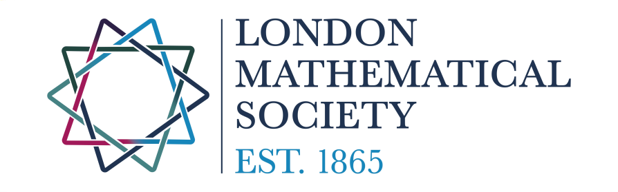

LMS-HIMR Research School:
Recent Advances in Manifold Theory
July 26 - 30, 2027, Southampton
The summer school will feature the following lecture series.
Besides those, there will be an opportunity for participants to give short talks.
Lecture Series:
Fabian Hebestreit (Bielefeld): Cobordism categories and surgery
Lisa Piccirillo (UT Austin): Techniques in exotica
Stephen Theriault (Southampton): Homotopy theory of manifolds
Organizers:
Maximilian Hans and
Daniel Kasprowski
Hosted by
The conference is financially supported by:

